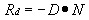
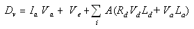
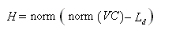
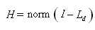
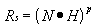
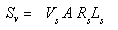

After adjusting the light intensity for any attenuation effects, Microsoft® Direct3D® computes how much of the remaining light reflects from a vertex given the angle of the vertex normal and the direction of the incident light. Direct3D skips to this step for directional lights because they don't attenuate over distance.
The system considers two reflection types, diffuse and specular, and uses a different formula to determine how much light is reflected for each. After calculating the amounts of light reflected, Direct3D applies these new values to the diffuse and specular reflectance properties of the current material. The resulting color values are the diffuse and specular components that the rasterizer uses to produce Gouraud shading and specular highlighting.
Microsoft® Direct3D® uses the following formula to compute diffuse reflection factors.

In this formula, Rd is the diffuse reflectance factor, D is the direction that the light travels to the vertex, and N is the vertex normal. Vector D is normalized; vector N is normalized only if the D3DRS_NORMALIZENORMALS render state is enabled. The light's direction vector is reversed by multiplying it by –1 to create the proper association between the direction vector and the vertex normal. This formula produces values that range from –1.0 to 1.0, which are clamped to the range of 0.0 to 1.0 and used to scale the intensity of the light reflecting from the vertex.
After the diffuse reflection formula is applied, the scaled light is then applied to the diffuse reflectance formula to determine the diffuse component at that vertex. The formula that combines ambient and diffuse reflection to create the diffuse component for the vertex looks like this:

In the preceding formula, Dv is the diffuse component being calculated for the vertex, Ia is the ambient light level in the scene, and A is the light intensity for a light source that has been attenuated for distance and spotlight effects (attenuation from Light Attenuation Over Distance multiplied by Spotlight Falloff Model). The L variables represent the light's properties, and the V entries represent the vertex color, where the subscripts a, d, and e applied to each denote the type of color—ambient, diffuse, or emissive. As the formula notation states, the system computes IaVa + Ve once, adding A(RdVdLd + VaLa) for every active light.
If the D3DRS_COLORVERTEX render state is enabled, the system selects colors for V based on the values set for the render states D3DRS_AMBIENTMATERIALSOURCE and D3DRS_DIFFUSEMATERIALSOURCE (or if two-sided lighting is enabled, D3DRS_BACKAMBIENTMATERIALSOURCE and D3DRS_BACKDIFFUSEMATERIALSOURCE). Set these render states to a member of the D3DMATERIALCOLORSOURCE enumerated type to cause the system to use the current material, or a color from the vertex, as the color source.
Modeling specular reflection requires that the system not only know the direction that light is traveling, but also the direction to the viewer's eye. The system uses a simplified version of the Phong specular-reflection model, which employs a halfway vector to approximate the intensity of specular reflection. This halfway vector exists midway between the vector to the light source and the vector to the eye. Microsoft® Direct3D® provides applications with two ways to compute the halfway vector, which is controlled by the D3DRS_LOCALVIEWER render state. If D3DRS_LOCALVIEWER is set to TRUE, the system calculates the halfway vector using the position of the camera and the position of the vertex, along with the light's direction vector. The following formula illustrates this.

In the preceding formula, norm is an operator that normalizes an input vector, VC is the vector that exists from the position of the vertex to the position of the viewpoint or eye, and Ld is the light's direction vector.
Determining the halfway vector in this manner can be computationally expensive. Alternatively, you can set D3DRS_LOCALVIEWER to FALSE. This instructs the system to act as though the viewpoint is infinitely distant on the z-axis. This setting is less computationally expensive, but much less accurate, so it is best used by applications that use orthogonal projection. When D3DRS_LOCALVIEWER is set to FALSE, Direct3D determines the halfway vector by the following formula.

This formula is similar to the first formula, but substitutes the vector I (0, 0, –1), which points at a viewpoint infinitely distant on the z-axis, instead of computing the vector VC.
After determining the halfway vector, H, the system uses the following formula to compute specular reflection.

In the preceding formula, Rs is the specular reflectance, N is the vertex normal, H is the halfway vector, and p is the specular reflection power of the current material, as specified by the Power member of the material's D3DMATERIAL8 structure. Vector H is normalized, and vector N is normalized only if the D3DRS_NORMALIZENORMALS render state is enabled.
As with the diffuse reflectance formula, this formula produces values that range from –1.0 to 1.0, which are clamped to the range of 0.0 to 1.0 and used to scale the light reflecting from the vertex. Also similar to the diffuse reflection model, the remaining light is applied to a formula that derives the specular component at that vertex:

In this formula, Sv is the specular color being computed. A is the light from a single light source that has been attenuated for distance and spotlight effects; for more information, see Light Attenuation Over Distance and Spotlight Falloff Model. The Rs variable is the previously calculated specular reflectance, Vs is the specular component for the vertex, and Ls is the specular light color output by the light.
If the D3DRS_COLORVERTEX render state is enabled, the system selects the color source for V based on the value of the render state D3DRS_SPECULARMATERIALSOURCE (or if two-sided lighting is enabled, D3DRS_BACKSPECULARMATERIALSOURCE). These render states can be set to a member of the D3DMATERIALCOLORSOURCE enumerated type to cause the system to use the current material or one of the color components for the vertex as the color source.
For more information, see Diffuse Reflection Model.